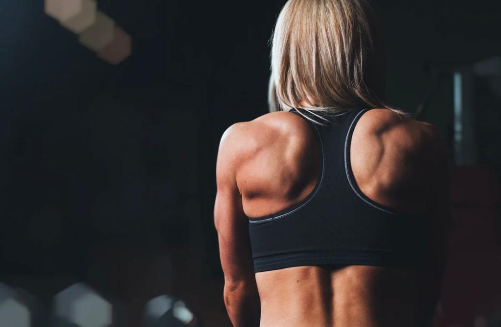

PROGRAMACIÓN PARA ATLETAS DE CROSSFIT
PREGUNTAS FRECUENTES
A quiénes estan orientadas las programaciones?
Las programaciones están dirigidas a todas aquellas personas que deseen mejorar su rendimiento en la disciplina del Crossfit®, ello con total independencia del nivel de habilidad y los pesos de levantamiento.
Contamos con la capacidad y experiencia para realizar planificaciones a todos los niveles, desde los iniciales como Scaled, hasta los mas elevados como la categoría de Elite.
Las planificaciones son adaptadas a todos los sexos y edades a partir de los 16 años.
Qué elementos necesito para realizar la planificación?
Los elementos básicos con los que debes contar son: barras, discos, dumbbels, cajón de salto, soga de salto, rack tanto para sentadillas como para pull up, k2e, ttb, etc.
La planificación también incluirá máquinas como Remo o Assault bike, para quienes puedan contar con ellas, y para quienes no, contarán con ejercicios que los reemplacen produciendo estímulos similares.
Si no contás con alguno de estos elementos, comentamos y buscamos la adaptación del movimiento.
Cuentan con la categoria de Intermedios?
Si, contamos con la planificación para intermedios, la misma no se encuentra publicada actualmente en la página porque esta siendo actualizada a los nuevos estándares.
Te sugerimos que para mas información te comuniques con nosotros a través de nuestro in box.
IR A CONTACTOCuál es el medio de comunicación con los coach?
La comunicación es a través de la app WAR.ZONE. PROGRAM.
Una vez que estas inscripto y se acredita el pago podrás bajar la aplicación a tu celular y desde allí visualizar no solo tu programación, sino que ademas podrás subir tus scores diarios y conversar con tu coach.
Las programaciones son mensuales?
No. Si bien el abono de inscripción si es mensual, la planificación es semanal.
Por lo tanto encontrarás en la app la programación de la semana todos los días domingo.